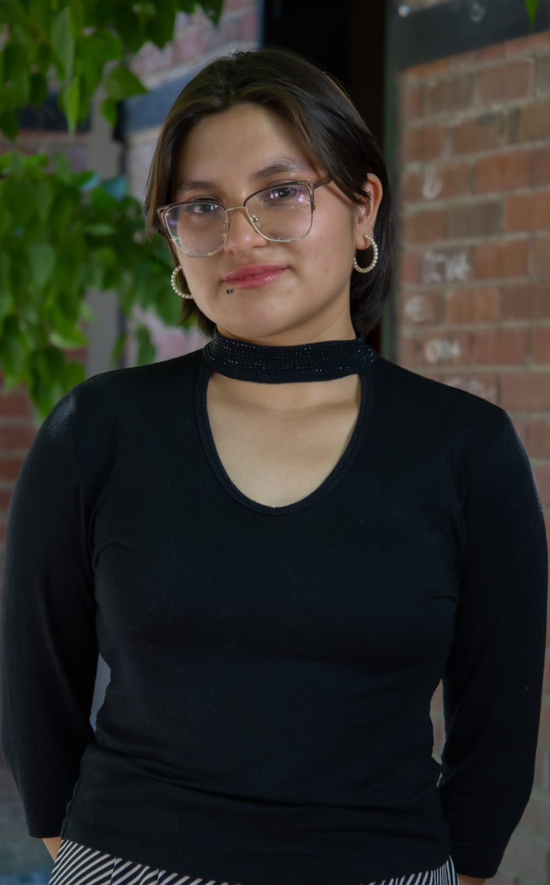
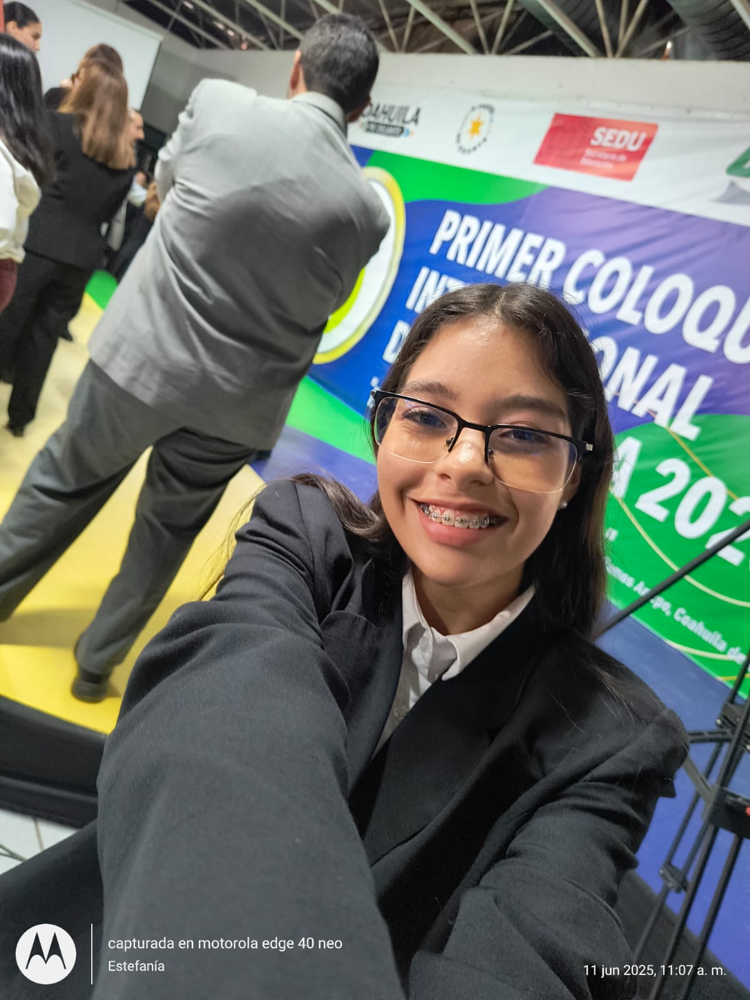
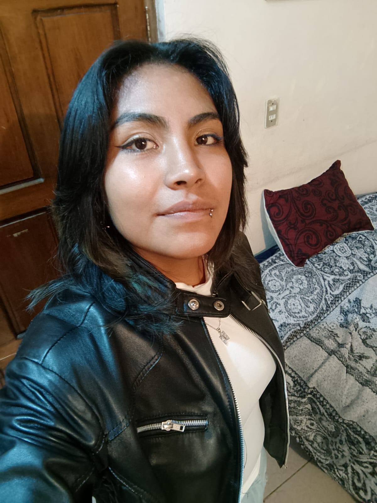
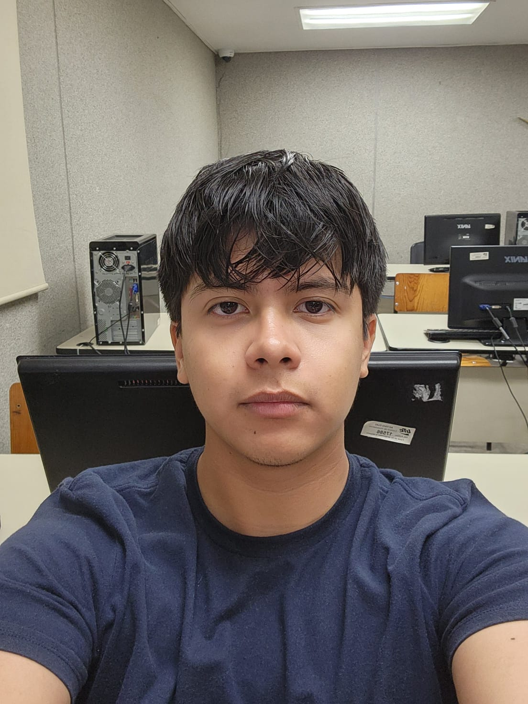
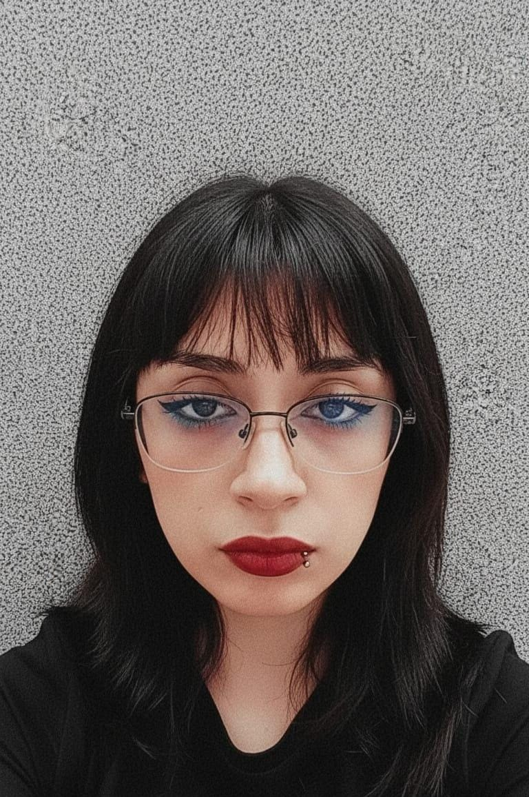

Yaritza Arroyo Diaz
Rol: Líder del proyecto y Desarrolladora Back-end y Front-end de página web.
Conoce a los integrantes del equipo y el rol que cada uno desempeña dentro del proyecto.

Rol: Líder del proyecto y Desarrolladora Back-end y Front-end de página web.
Rol: Desarrollador IoT y Software y Coordinador de Prototipo.
Rol: Analista y Diseñadora.
Rol: Desarrollador de Back-end.

Rol: Analista y Diseñadora.

Rol: Desarrolladora de Software.

Rol: Desarrollador del Prototipo.

Rol: Diseñadora y Equipo de trabajo.
Rol: Equipo de trabajo.